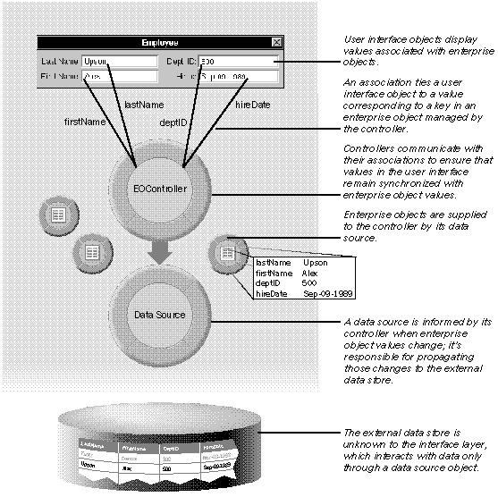

Enterprise Objects Framework Release 1.1 Copyright ©1995 by NeXT Computer, Inc. All Rights Reserved.
| 3 |
From Objects to the User Interface
| Chapter 2, "From Database to Objects," described how enterprise objects are created and handled in the lower levels of the Framework. This chapter describes how enterprise objects are handled in the interface layer, where enterprise object values can be displayed and edited in the user interface, and how interface layer objects interact to coordinate the flow of data between the user interface and a data source. |
| Overview of the Interface Layer |
| The interface layer is structured according to a model-view-controller paradigm, in which an application's data (model) is kept separate from the user interface (view) by an intermediate layer (controller). Your application's enterprise objects are the model ("model" in this context refers to an abstract concept, not to a model you create in EOModeler). The classes of the interface layer compose the controller system for your application.
The major actors in the interface layer are: |
| User interface objects | ||
| EOController | ||
| EOAssociation | ||
| Enterprise objects | ||
| A data source |
| Figure 12 illustrates how objects in the interface layer interact to manage the flow of data between the user interface and the database. |
|  |
| Figure 12. The Interface Layer
Briefly, the role played by each object is as follows (starting at the top of the diagram and working down): |
| User interface objects (in this case, TextFields) display values from enterprise objects. A user interface object gets the value it displays from an EOAssociation, which ties it to a single key (class property name) in an enterprise object or objects. When values change in the user interface, the user interface object sends its association a message to inform it of the change. | ||
| EOAssociations (indicated in Figure 12 by the dark lines from the user interface to the EOController object) coordinate the flow of data between the user interface and enterprise objects managed by the EOController. Each association is labeled with the enterprise object class key for which it's displaying a value: firstName, lastName, deptID, and hireDate. All enterprise objects of a given class have the same set of keys, but the value associated with a particular key varies from object to object. For example, in Figure 12, the value displayed for the key firstName is "Alex", but if another object is selected (representing a different record in the database), the value displayed for firstName changes to represent the newly selected record. | ||
| The EOController communicates with its associations to ensure that changes in the user interface are reflected in corresponding enterprise object values, and conversely, that the user interface is updated when enterprise object values change. | ||
| A data source supplies enterprise objects to the EOController. A data source can get its enterprise objects from any external data store. In Figure 12, the source of enterprise objects is the access layer. The access layer is the region between the data source object and the relational database; it isn't explicitly shown in the figure. |
| These concepts are described in more detail in the following sections. |
| Data as Enterprise Objects |
| Data comes into the interface layer in the form of enterprise objects. Regardless of the external data store being used, enterprise objects are passed into the interface layer by a data source. Remember, a data source is an object conforming to the EODataSources protocol that supplies an EOController with enterprise objects; data sources know how to fetch, insert, update, and delete enterprise objects.
Data sources are responsible for propagating changes in enterprise objects to the external data store. However, a data source doesn't monitor the enterprise objects it provides to a controller; it relies on the controller to tell it when changes to enterprise objects need to be saved to the external data store. This exchange is initiated when a controller receives a saveToDataSource message, informing it to save any changes that have occurred in its enterprise objects to its data source. The data source then responds by performing the necessary insert, update, and delete operations for the objects. When a controller receives a saveToDataSource message, the following sequence of events occurs: |
| 1. | The controller sends the enterprise object affected by the update, insert, or delete operation a prepareForDataSource message to inform the object that it's about to be written to persistent storage. | |
| prepareForDataSource signals the enterprise object to take any necessary action (such as validating changes) and to either allow or abort the save operation by returning YES or NO. | ||
| 2. | Depending on the type of operation, the controller sends the data source an insertObject:, deleteObject:, or updateObject: message for the associated enterprise object. | |
| 3. | The controller handles the next operation (returning to step 1) until all operations have been performed. | |
| 4. | To complete the transaction, the controller either sends the data source a saveObjects message to make the changes permanent, or, in the case of an error, sends a rollback message to abort the transaction and undo the changes to the database that were made during the current transaction. | |
| The rollback method applies only to data sources such as EODatabaseDataSource that implement the method; it's declared in the EORollbackDataSources protocol. When the data source is an instance of EODatabaseDataSource, saveObjects has the effect of committing the transaction. |
| This outline of steps leaves out details such as delegate messages, error conditions, and so on. For information on these details, see the EOController class specification in the Enterprise Objects Framework Reference.
Using an instance of the EODatabaseDataSource class supplied with the Framework insulates the user interface from the complexities of database transactions. If an EODatabaseDataSource is sent an insertObject:, deleteObject:, or updateObject: message and no transaction is open, it creates one; all subsequent operations are part of the same transaction until the data source receives a saveObjects message, at which point it commits the transaction. For more information on data sources, see the EODataSources protocol and the EODatabaseDataSource class specifications in the Enterprise Objects Framework Reference.
Value Coercion A data source has an additional responsibility: Converting the values that are returned when data is edited in the user interface to the appropriate type for use by the corresponding enterprise object. Except in the case of images, these returned values are usually NSStrings. Value coercion occurs when the controller learns that a value has been edited in the user interface and sends its data source a coerceValue:forKey: message. coerceValue:forKey: takes the key of an enterprise object as its argument, then coerces the value associated with the key to one of the canonical enterprise object value classes (NSNumber, NSString, NSCalendarDate, NSData), or to a custom value class associated with the key. When your data source is an instance of EODatabaseDataSource, the data source uses a model's mapping between attributes and value classes to convert values into the correct type for the enterprise object. After the data source converts the value to the appropriate type, the controller delivers the changes to the enterprise object in a takeValuesFromDictionary: message. For example, suppose you edit the value of an employee's salary in the user interface. The controller learns of the change and sends its data source a coerceValue:forKey: message in which the class key (salary) associated with the value being coerced is specified as an argument to the method. The data source consults the model and determines that the value class for the salary attribute is NSNumber. It converts the string representation of the salary into an NSNumber and returns it to the controller, which applies the new value to the corresponding enterprise object with a takeValuesFromDictionary: message. If the salary property in the enterprise object is an instance variable declared as a scalar type such as double, takeValuesFromDictionary: further coerces the NSNumber object returned from the data source into the specified scalar type.
Entity Controllers A controller works so closely with its data source that for applications based on a relational database, it's common to use an entity controller, which consists of an EOController pre-connected to an EODatabaseDataSource. An entity controller is created from an entity when you drag a model file (or a single entity in a model) into Interface Builder. An entity controller has the following characteristics: |
| It's identified with an entity defined in a model. A controller and its data source manage the enterprise objects that correspond to a single entity. | ||
| For more information on specifying an enterprise object class for an entity, see Chapter 5, "Using EOModeler." | ||
| It has access to the keys of the associated enterprise object class (keys correspond to the properties you specified for the entity in your model). These keys (as in key-value pairs) are the means by which an enterprise object's data is accessed by other parts of the Framework. For example, when you form an EOAssociation in Interface Builder by connecting an entity controller to a user interface object, the key specified in the association is used to fetch data from the underlying enterprise object for display. |
| Data as Values |
| Whereas data comes into the interface layer in the form of enterprise objects, it's displayed in the user interface as values. The data in enterprise objects is transported to the user interface by EOAssociation objects.
EOAssociations are used by a controller to mediate between enterprise objects and the user interface; controllers don't interact with user interface objects directly. An association ties a single user interface object (such as a TextField) to a value corresponding to a key in an enterprise object or objects managed by the controller. For example, a TextField displays a value such as "12-1-93" for an enterprise object key hireDate. Just as edited values returned from the user interface by an association need to be converted to the appropriate value class type before they can be applied to an enterprise object (as described in "Value Coercion"), an association must convert the value it extracts from an enterprise object to a type that can be displayed by the user interface. With the exception of images, this type is usually NSString. A controller works closely with its associations to ensure that values displayed in the user interface remain synchronized with the corresponding enterprise object values. When an enterprise object value changes, the controller tells its associations. Conversely, when an association is notified of a change by its user interface object, it informs its controller of any changes to the displayed value. When a value in a user interface object changes, the following sequence of events occurs: |
| 1. | The user interface object sends a message to its association to tell it that a change has occurred. The type of message depends on the association involved; it could be an action message or a delegate message. | |
| 2. | The association tells its controller that it's been edited with an associationDidEdit message. | |
| 3. | The controller asks the association for its new value by sending it a value message. | |
| 4. | The controller sends coerceValue:forKey: to its data source; the data source converts the value to a value class type that can be used by the enterprise object. | |
| 5. | The controller delivers the changed values to the enterprise object in a takeValuesFromDictionary: message. | |
| 6. | The controller sends updateObject: and saveObjects to the data source (note that this step occurs only if the controller is not configured to buffer edits and operations; for more information see "Buffering"). | |
| 7. | The controller informs its associations that its enterprise objects have changed with a contentsDidChange message. | |
| When a change to the controller also involves a change of selection, the controller sends selectionDidChange to each association. This enables the association to display values for the proper object, or highlight the selected objects if its user interface object displays multiple values. | ||
| 8. | Each association sends a valuesForKeys: message to the current enterprise object (the one that's selected). The association compares the value returned by the enterprise object with the value it last sent to its user interface object; if they're different, it sends an appropriate update message to its user interface object, for example, setStringValue: to a TextField. |
| In addition to informing its associations when its objects or current selection have changed, a controller uses the endEditing method to order its associations to finish editing. Before a controller can perform any operation (such as fetching, inserting a new object, or setting an undo mark), it must collect any new edits from its associations. When the controller sends endEditing to its associations, they finish editing, relinquish first responder status, and notify the controller of any changes with associationDidEdit:.
This outline of steps leaves out details such as delegate messages, error conditions, and so on. For information on these details, see the EOController, EOAssociationNotification, and EOAssociation specifications in the Enterprise Objects Framework Reference. Note: From the standpoint of the controller, all associations appear identical. However, each type of user interface object has its own corresponding association. The Enterprise Objects Framework provides associations for NXTableView, PopUpList, Form, TextField, Text, NXBrowser, NXImageView, and in some configurations, Matrix. |
| Buffering |
| Configuring a controller to buffer changes to values allows you to control when those changes are applied. Changes to data occur at three levels in the interface layer: When you edit values in the user interface, when you apply those edited values to enterprise objects managed by an EOController, and when you write the changed enterprise object values to the database. Buffering allows you to cache changes and then apply them as a group, instead of individually.
EOController offers two types of buffering: edit buffering and operation buffering. Edit buffering causes a controller to stockpile changes made to enterprise objects until it receives a saveToObjects message. It then delivers the changes to each object in a single takeValuesFromDictionary: message. Buffering edits is useful when related changes must be validated as a whole; for example, if a date has to be within a certain range and its components are entered in separate fields. Operation buffering causes a controller to stockpile data source operations (that is, insert, update, and delete operations) until it receives a saveToDataSource message. It then sends the operations to the data source and ends with a saveObjects message, which commits the modified objects to persistent storage. Buffering causes changes to be applied in a single transaction, but increases the risk that other applications may make conflicting changes to the same data before your changes are applied. When you don't buffer operations, a controller sends the data source an insertObject:, updateObject:, or deleteObject: message immediately after performing a related operation on an enterprise object, followed by a saveObjects message. This approach ensures that the values in enterprise objects are continually synchronized with database data. You can programmatically set the behavior of edit and operations buffering by using the EOController methods setSavesToObjectsAutomatically: and setSavesToDataSourceAutomatically:. Supplying an argument of YES to these methods turns off buffering for edits and operations, respectively. The following table illustrates how automatic saving affects the state of the controller's enterprise objects and data source: |
| Saves automatically to: |
| Objects | Data Source | Behavior |
| YES | YES | All changes are immediately applied to the controller's data source. |
| YES | NO | Edits are immediately applied to enterprise objects, but you must send | |
| saveToDataSource | to apply changes to the data source. |
| NO | YES | Edits to enterprise objects are buffered, but when you send saveToObjects, | |
| changes | are immediately applied to the data source. |
| NO | NO | You must send saveToObjects to apply changes to enterprise objects, then send | |
| saveToDataSource | to apply changes to the data source. |
| While the default behavior in the EOController class is to buffer edits and operations, the default behavior that Interface Builder imposes on controllers is the opposite--that is, it sets controllers to save automatically to objects and the data source. You can set the desired buffering behavior for your application either programmatically or by using the EOController Inspector in Interface Builder. |
| Undo |
| An EOController can be configured to maintain an undo stack, which records changes to enterprise objects. When the controller receives an undo message, it reverses all enterprise object and data source changes back to the last defined undo point, then sends its associations a contentsDidChange message.
Unless you specify otherwise, an undo operation undoes all of the changes on the stack. However, you can use the setMarksEveryOperation: method to direct the controller to mark an undo point for every operation. An operation is delineated by whatever you do to a field before you finish editing its contents. However, you can programmatically set undo marks to reflect a coarser level of edits. You can further refine the behavior of the undo stack by using the setMaximumUndoMarks: method to limit the number of marks that are recorded. Marks added after the maximum specified amount will cause earlier marks to be discarded. Setting the maximum to zero (the default) allows an unlimited undo stack. For more information on EOController, buffering, and undo, see the EOController class specification in the Enterprise Objects Framework Reference. |
| Using Interface Builder |
| Using Interface Builder to configure interface layer objects greatly simplifies the development process. Much of the work of creating an application (creating a controller and a data source from an entity, connecting to the database, fetching and displaying objects whose values can be edited and persistently stored) is done for you. This approach works well as long as your application meets these conditions: |
| Your external data store is a relational database, and you're using an instance of EODatabaseDataSource as your data source. | ||
| You don't need a fine level of control over how objects are fetched from the database. Fetching at the EODatabaseDataSource or EOController levels has the effect of fetching all objects at once, which can be time-consuming for large numbers of objects. | ||
| You don't need to dynamically control the behavior of interface layer objects at run time. |
| Sometimes, however, you need to manipulate the interface layer more directly. For a discussion of working with the interface layer programmatically, see Chapter 12, "Working With the Interface Layer." |